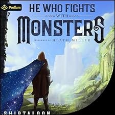
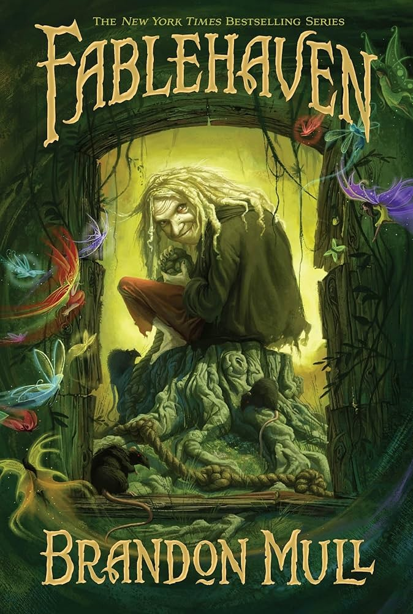
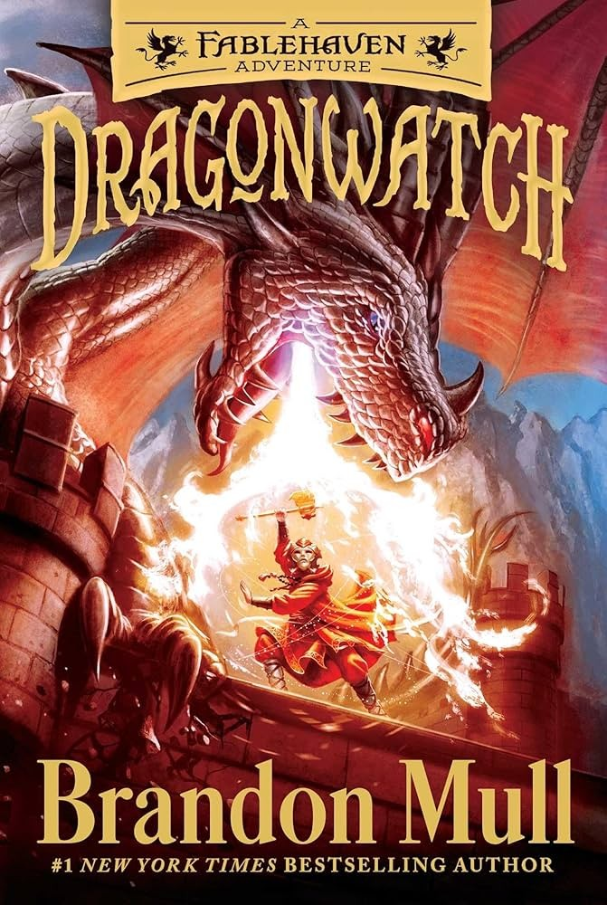
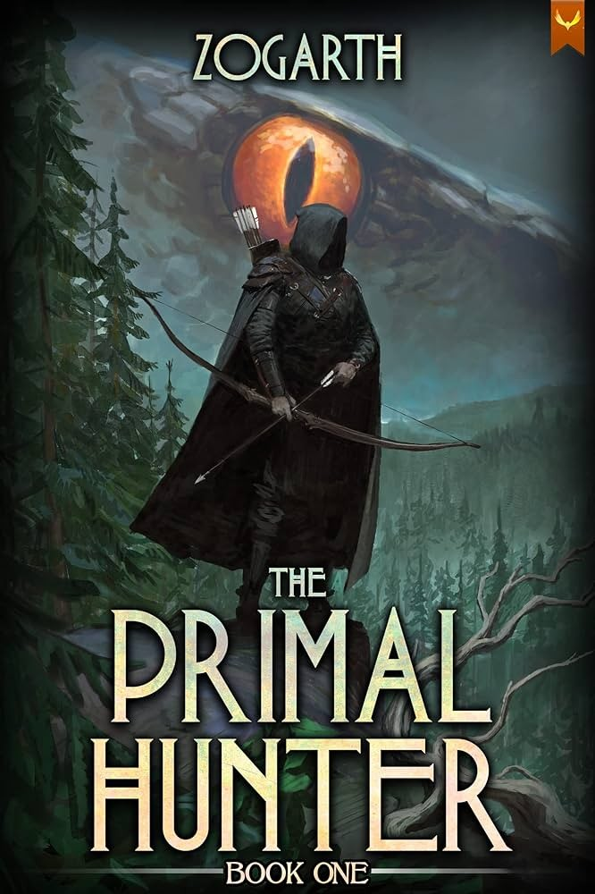

Book List
Super Powereds
by Drew Hayes
Summary
In a world where some people are born with superpowers (Supers), a few unlucky ones are Powereds—unable to control their abilities. After a secretive procedure gives five Powereds full control, they enroll at Lander University’s elite Hero Certification Program.
Why I like it
I found this series four years ago while I was a truck driver. I was trying to find a good series to tide me over for a while as I drove. I remembered reading the first few chapters of this series when I was back in high school, so I did some research and found it again. And I’m so grateful I did. Hands down, without a shadow of a fact, this has become my number one series. It has some of the greatest world-building and character growth I have ever seen, and when you read this series, you come to truly love all of the characters. I mean that literally, every single one of the characters in this book gets spotlight, and you end up caring for each and every one of them. It will be slow at first, but I implore you to give it a go because I promise it is worth it. I always listen to it on audiobook (The narrator Kyle McCarley is fantastic, by the way), and the first book alone is 26 hours long. So, give it a go, I promise you will come to love it. Seeing as how I’ve listened to it 7 times since I first read it, I have a feeling you’ll love it too.
How many books, and is there an audiobook?
I answered this above, but yes, there are two versions of the audiobook. There’s a version by Kyle McCarley as I mentioned which is just him as the narrator going through the whole series. There is also a dramatized version, but I never listened to that version. . I will warn you now since this will become a broken record from here on out: This is a hefty series. There are 4 books in the series with a book that is a side story of one of the characters, so technically five books in total (I recommend reading the spin off book, Corpies, in between books 2 and 3, since that’s about the time it is placed). In total you will be looking at about 180 hours or so of total content. You’ll wish there is more when you’re done with it, though.

He Who Fights With Monsters
by Shirtaloon (Travis Deverell)
Summary
Jason, a laid-back Australian office worker, wakes up in a magical world filled with monsters, magic, and danger. As he gains power through a unique LitRPG/cultivation system, he must navigate political intrigue, dark magic, and his own morally gray abilities.
Why I like it
You ever want to follow the adventures of a sarcastic Aussie that doesn’t care even a little bit about authority, even when he’s in a world where authority means overwhelming power that could kill him with a thought? Then this series is right for you. This series is under the LitRPG genre, which means there’s going to be videogame-like concepts inside of it. I discovered this series about the start of summer last year, and it has definitely grown to be in my top three favorite book series. Once again, there’s absolutely incredible world-building and character growth in this series as well. You will come to know and love a wide cast of characters who you will grow way too attached to. This series also starts a bit slow, but I promise it picks up nicely. There’s always twists and turns left and right, and you might not fully know what to expect next. Give it a go, and you’ll come to love the world this author has brought into being.
How many books, and is there an audiobook?
Once again, yes, there is an audiobook, and the narrator, Heath Miller, is also fantastic. There is a caveat to this audiobook: It’s only available on Audible. However, you may end up wanting to read the series again once you are done, so it’s nice to own the books. This series is even more hefty than the last one by far. With a current total of 12 books out and still going, you are looking at about 270 hours or so of listening time. That’s a lot, right? And yet it is still going, with at least two more books confirmed to come our way at some point. The world is so vibrant, though, and it’s such an amazing read with great character growth.


Fablehaven/Dragonwatch
by Brandon Mull
Summary
Kendra and Seth discover that their grandparents are caretakers of Fablehaven, a secret preserve where magical creatures—both wondrous and dangerous—are protected from the outside world. What begins as a quiet visit quickly turns into a series of escalating challenges as ancient rules are broken, dark forces stir, and the siblings are drawn into conflicts far bigger than themselves. The series blends adventure, mystery, and humor with a growing sense of danger, showing how ordinary kids rise to meet extraordinary threats in a hidden world full of enchantment and peril.
Why I like it
This series holds a lot of sentimental value to me, if I’m being honest. When I was 10 and began really getting into books, my dad pounced on that opportunity and asked me if I wanted him to read to me one of his favorite books. He saw this as an opportunity to get close to me and to spend time with me while I was young. Over the years he has read to me multiple series, but this was the first one that started it. Brandon Mull is a fantastic author, and I’ve not been disappointed by a single book that he has written so far, and I’ve read just about all of them. Now I know what you might be thinking, “Isn’t this a children’s book?” The answer is yes, it is, but it doesn’t detract from the fact that it is a fantastic series full of magic, adventure, and wonder. You forget at times that the main characters are young because they face serious danger and death around every corner. Combine that with the expert writing of Brandon Mull, and it’s easy to get sucked into this series. If all else fails and you still don’t think this series suits you, just wait then. When you have the chance to read a book to a child, I would highly recommend this one to read. Both of you will enjoy it immensely.
How many books, and is there an audiobook?
While there is an audiobook for this series, I’ll admit I have never listened to it before. This book contains two series, Fablehaven and Dragonwatch, where Dragonwatch is a direct sequel to Fablehaven. With 5 books in Fablehaven and 5 books in Dragonwatch, this recommendation also gives you a lot to read. Go ahead and give it a try! The first book is a pretty quick read.

The Primal Hunter
by Zogarth
Summary
Jake, a bored office worker, is thrown into a System-governed multiverse where strength is everything. Embracing the hunter archetype, he evolves through dungeons, cosmic factions, and philosophical trials, becoming something primal and terrifying.
Why I like it
So, this recommendation is a little unique, and that reason is this: I haven’t finished it. By that I mean I am currently in the middle of reading it, but I know for a fact that I’m going to finish it. There’s going to be some similarities with He Who Fights With Monsters that I recommended above because it is also a LitRPG genre. This book is something you don’t have to wait for any action, though. Right off the bat the main character, Jake, is thrown into a whole new world that he has to learn to navigate. With death around every corner, he has to learn to trust his instincts and become as powerful as he is able to, but this doesn’t come easy. The reason I recommend this series before I’ve finished it is because I have been absolutely obsessed with it so far. I reckon is has the chance to be in my op three by the time I’m done with it, but I need to finish the series first before making that verdict. Once again, I highly recommend you check this series out when you get the chance. I’m sure you’ll come to love it.
How many books, and is there an audiobook?
Yes, there is an audiobook, and the narrator, Travis Baldree, is really good as well. This series has more books than He Who Fights With Monsters but has less listening time at about 260 hours with 13 books out so far. Don’t get me wrong, though, as it looks like the series isn’t close to being over yet. As far as I know, 15 books are at least guaranteed, with possibly even more coming after that. I imagine this will be one of the beefiest series I’ll end up reading for a while.